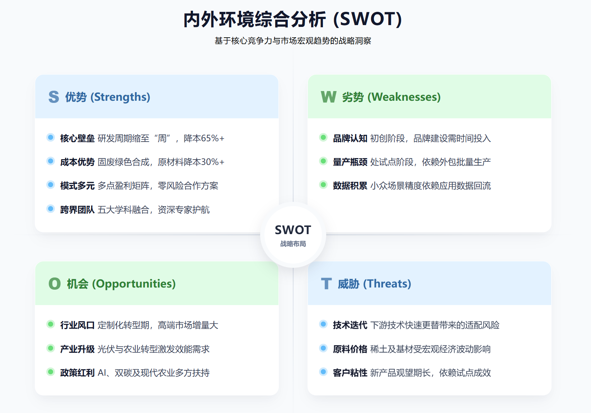

驭光智膜
驭光智膜01 荧光材料基因数据库
多源采集 CNKI、Web of Science、Materials Project 与实验数据，已形成 3228 条高可信样本；支持按材料体系与应用场景进行动态扩增和定制化构建。
以荧光材料基因数据库为底座，以 PINN 智能预测为引擎，叠加老化预测三维评价、绿色废矿提取合成、转光膜制备与测试，构建完整研发与交付链条。
多源采集 CNKI、Web of Science、Materials Project 与实验数据，已形成 3228 条高可信样本；支持按材料体系与应用场景进行动态扩增和定制化构建。
联合发射波长、材料成本、老化速率常数构建三维评价曲面，在特定落地环境下输出可执行参数组合，实现性能、寿命和成本协同最优。
面向发射波长与劈裂度建立三层全连接预测网络，三项指标精度均超过 0.8；结合 SHAP 可解释性分析，实现配方优化从经验驱动转为数据驱动。
打通锰系废矿提取碳酸锰、铬系废矿提取氧化铬与荧光粉合成路径，构建资源化利用-高值材料制备的绿色工艺路线，兼顾成本与环保。
从颗粒半径控制、吹膜/压膜工艺到光谱透光均匀性与耐候稳定性测试，形成可规模化复制的工程化验证体系，支撑中试到量产落地。
